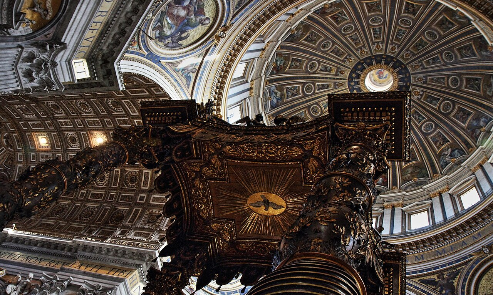
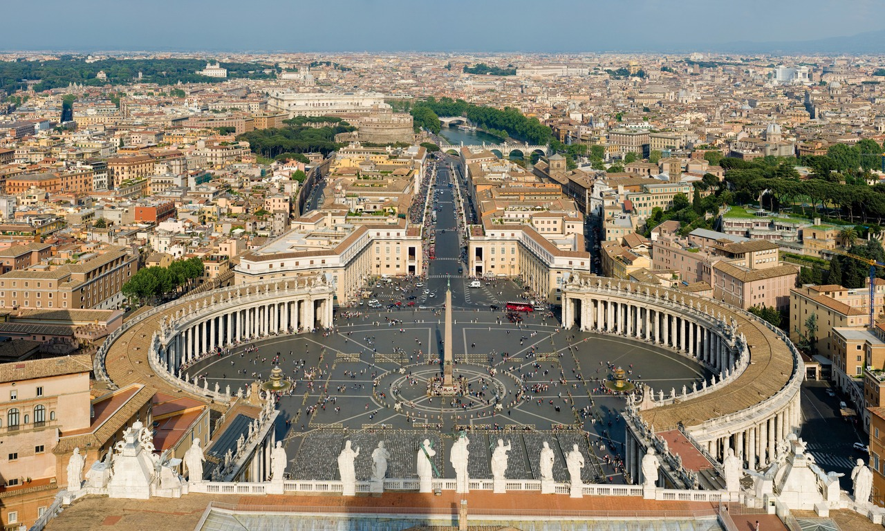

St. Peter's Basilica Tickets

You do not need a ticket to enter St. Peter's Basilica. The church is free to go into, but everyone passes through a security line in St. Peter's Square that can run one to two hours in peak season. What you pay for is skipping that wait, climbing the dome, or taking a guided tour. St. Peter's Basilica tickets start at about €25 for a self-guided dome and audio option, with guided tours up to around €125 for the basilica with the Vatican Museums and Sistine Chapel. The dome is the big paid highlight: a lift takes you partway, then 320 spiral steps lead to the top.
Most people searching for St. Peter's Basilica tickets are surprised to learn the basilica itself is free. There is no entry ticket for the church.
The thing worth paying for is time and access: a skip-the-line route past the long security queue, a ticket to climb the dome, or a guide to explain what you are seeing.
This guide covers exactly that. It answers whether you need a ticket, compares the basilica and dome options with prices, explains the dome climb, and lists what you see inside.
For St. Peter's tomb and the ancient excavations, see our separate Vatican Necropolis and Scavi tour guide.
📋 In This Guide
🎟 Top Vatican Tickets & Tours
St. Peter's Basilica and Dome Tickets
These options focus on the basilica itself and the dome. Here is a quick comparison, then the detail and meeting point for each.
| Ticket | Price | Guide | Grottoes (Papal Tombs) |
|---|---|---|---|
| Basilica with Dome & Audio App | €25 | Audio app | No |
| Basilica, Dome Climb & Underground | €43 | Live, small group | Yes |
| Basilica, La Pietà, Papal Tombs & Dome | €90 | Live | Yes |
St. Peter's Basilica with Dome and Audio App
The budget self-guided option, with the dome included.
- This tour takes about 1.5 to 2 hours at your own pace
- It has starting time slots from 8:00 am to 4:30 pm
- Entry to the basilica floor, a dome climb pass (lift to the terrace, then stairs to the top)
- A downloadable audio app for the basilica and Rome is available in English, Spanish, French, German, Italian, or Chinese
- This tour does not skip the security line, so you still clear the checkpoint in the square
- Prices: Adult (18+ years): €25, Youth (7 - 17 years): €17, Children (under 7 years): Free
- Free cancellation up to 24 hours before the day of your visit
- Meeting point: The greeter desk at Piazza Pio XII, near the right colonnade outside St. Peter's Square, for ticket activation and app setup
St. Peter's Basilica, Dome Climb and Underground Small Group Tour
The best-value guided climb, in a small group.
- This tour takes about 2.5 hours with starting time slots at 09:00 am, 11:00 am, and 12:30 pm
- You choose your expert guide in English, Arabic, Chinese, French, German, Italian, Polish, Portuguese, Russian, Spanish, and Turkish
- You get a dome climb ticket (lift to the terrace included), a guided tour of the basilica interior, and the underground Papal Grottoes (the papal tombs on Level -1),
- Whisper earpieces will be given during the tour
- Free cancellation up to 24 hours before the day of your visit
- Does not include the Vatican Museums, the Sistine Chapel, or the deeper Scavi excavations
- Prices: Adult (13+ years): €43, Children (under 13 years): €42
- Meeting point: Piazza Pio XII, outside the St. Peter's Square perimeter
St. Peter's Basilica, La Pietà, Papal Tombs and Dome Guided Tour
A fuller guided focus on the basilica and its art.
- This tour takes about 2.5 hours with morning departures at 08:30 am and 01:30 pm
- A licensed guide is available in English, French, German, Italian, and Spanish
- You get a dome climb ticket (lift to the terrace, then stairs to the top), in-depth commentary on Michelangelo's La Pietà, the main altar and nave, and a guided walk through the Papal Grottoes, with radio earpieces
- Does not include the Vatican Museums or Sistine Chapel, or the Level -2 Scavi necropolis
- Prices: Adult (18+ years): €90, Children (under 18 years): €64
- Free cancellation up to 24 hours before the day of your visit
- Meeting point: Largo del Colonnato 5, just outside the arm of St. Peter's Square
Climbing the Dome
The dome, or cupola, is the single best thing you can add to a basilica visit, and the main reason people buy St. Peter's Basilica dome tickets. It climbs to the highest viewpoint in Rome, looking straight down St. Peter's Square.
Here is how the climb works, because it catches people out:
- The lift takes you partway - A lift goes to the first terrace, the roof level, which skips the first 231 steps and leaves you looking down into the nave and up at the inner mosaics.
- Then it is all stairs - From the terrace to the top balcony there is no lift. Everyone climbs 320 narrow, sloping, spiral steps, so the dome is 551 steps in total from the ground.
- Cost on site - About €10 for all the stairs, or €15 with the lift to the terrace. The tickets above include the dome, so you do not pay again.
- Who should skip it - The final staircase is tight, with low tilted walls and few handrails. It is not recommended if you are pregnant, have heart or breathing conditions, or struggle with claustrophobia or vertigo. The climb is one way, so you cannot easily turn back.
The dome keeps shorter hours than the basilica, closing in the late afternoon, so go early if it is a priority.

See St. Peter's with the Vatican Museums and Sistine Chapel
If you want the basilica as part of a full Vatican visit, these tours add the Vatican Museums and the Sistine Chapel, and use the direct internal passage from the Sistine Chapel into St. Peter's, which skips the square queue entirely.
St. Peter's Basilica Guided Tour with Vatican Museums and Sistine Chapel
- This tour takes about 3 hours, with departures from 08:15 am to 03:15 pm.
- Skip-the-line entry to the St. Peter's Basilica, Vatican Museums, and Sistine Chapel
- A licensed guide is available in English, French, German, Italian, and Spanish
- Headsets will be provided during the tour
- You go through the direct passage into St. Peter's Basilica, and a guided walk inside past La Pietà and the Baldacchino
- Price: Adult (18+ years): €125, Youth (6 - 17 years): €115, Children (under 6 years): Free
- Meeting point: Via Germanico 8, near Ottaviano metro
- Full detail on our Vatican Museums guided tour and Sistine Chapel tickets pages
St. Peter's Small-Group Tour with Vatican Museums and Sistine Chapel
- This small group tour takes about 3 hours and it starts at 2:00 pm
- An ultra-small group with a maximum of 6 people
- You get a priority museum entry, and explore Gallery of Maps, Raphael Rooms, and Sistine Chapel, then the direct shortcut into St. Peter's Basilica
- An expert guide is available in English, Italian, French, Spanish, and Portuguese
- Headsets will be provided during the guided tour
- Prices: Adult (18+ years): €189, Youth (3 - 17 years): €174, Children (under 3 years): Free
- Meeting point: The agency check-in near Via Sebastiano Veniero
- Does not include the dome climb
Early Morning Vatican, Sistine Chapel and St. Peter's Tour
- This tour takes about 3.5 hours and starts at 7:30 am.
- You have an early entry before the public
- A complete Vatican tour with a Private Guide for you and your group only
- A crowd-free Sistine Chapel and Raphael Rooms, and a direct escort into St. Peter's Basilica
- Price: Adult (18+ years): From €600, varying by group size
- Meeting point: Viale Vaticano, outside the main museum gates
- Full detail on our Vatican early morning tour page
Do you need tickets for St. Peter's Basilica?
No, you do not need a ticket to enter St. Peter's Basilica. Going into the church is free for everyone.
The catch is the security line: every visitor clears an airport-style checkpoint run by the Italian police in St. Peter's Square, and in high season that queue often takes one to two hours.
So tickets to St. Peter's Basilica are really about three things:
- Skipping the line - A skip-the-line or guided ticket uses a priority security lane, cutting the wait to a few minutes instead of over an hour.
- Climbing the dome - The dome is a paid extra, whether you buy it at the door or as part of a ticket.
- A guide - A guided tour explains the art and, on some options, adds the Vatican Museums and Sistine Chapel.
If you are happy to wait and explore on your own, the basilica costs nothing. If your time matters, the paid options below are what to look at.
What You See Inside
St. Peter's is the largest church in the world, and the art inside is the reason to slow down.
- Michelangelo's La Pietà, his marble of Mary holding Christ, carved in 1499 and the only work he ever signed, now behind glass near the entrance.
- Bernini's Baldacchino, the huge bronze canopy from the 1630s over the papal altar, which stands above St. Peter's tomb far below.
- The bronze statue of St. Peter, its foot worn smooth by centuries of pilgrims' touches, and the Cathedra Petri, Bernini's gilded throne at the far end.
- The Papal Grottoes, the crypt under the floor with the tombs of many popes, included on some of the tours above.
For the ancient necropolis and St. Peter's actual tomb one level deeper, see the Vatican Necropolis and Scavi tour. You can also read about the square itself in our St. Peter's Square guide.
Dress Code, Security, and Rules
St. Peter's is an active place of worship, and the rules are enforced at the door.
- Dress code - Shoulders and knees must be covered, for men, women, and children. No sleeveless tops, shorts, short skirts, or beach sandals, and hats come off inside. See the Vatican dress code guide.
- Security - Everyone passes through metal detectors. Pocket knives, scissors, glass bottles, large metal-tipped umbrellas, and selfie sticks are not allowed.
- Luggage - Large suitcases and big backpacks are not permitted. There is a free cloakroom, but you cannot collect items there if your tour ends elsewhere.
- Inside - Keep quiet and respectful, and photography is allowed without flash.
Opening Hours
St. Peter's Basilica is open daily, from 7:00 am to around 7:00 or 8:00 pm, with hours shifting by season. The dome closes earlier, generally by late afternoon, with last entry about 45 minutes before closing.
On Wednesday mornings the basilica is often restricted during the Papal Audience in the square. Always check the current times when you book, and for planning the wider visit see our opening hours guide.
Frequently Asked Questions
Do you need tickets for St. Peter's Basilica?
No. Entry to St. Peter's basilica is free for everyone. You only need a paid ticket to skip the security line, to climb the dome, or to take a guided tour.
How much are St. Peter's Basilica tickets?
The basilica itself is free. Paid options start at about €25 for a self-guided dome and audio ticket, €43 for a small-group guided climb, and €90 for a fuller guided tour. Combined tours with the Vatican Museums run €125 and up.
How much does it cost to climb the dome?
To climb St. Peter’s Basilica dome, it costs about €10 for the stairs only or €15 with the lift to the terrace. Most of the tours here include the dome in the price, so you do not pay separately.
How many steps is the dome?
The dome is 551 steps in total. The lift skips the first 231 to the terrace, then there are 320 narrow spiral steps to the top, with no lift for that part.
Is there a dress code for St. Peter's Basilica?
Yes, and it is enforced. Shoulders and knees must be covered, with no sleeveless tops, shorts, or short skirts, and hats are removed inside.
How do I skip the line at St. Peter's Basilica?
Book a skip-the-line or guided ticket that uses the priority security lane, or take a tour that enters through the Vatican Museums and uses the internal passage from the Sistine Chapel, which avoids the square queue completely.
Can you see St. Peter's tomb?
The Papal Grottoes with recent popes' tombs are included on some basilica tours. St. Peter's own tomb is deeper, in the ancient necropolis, and needs the separate Scavi tour.
Related Vatican Visitor Guides